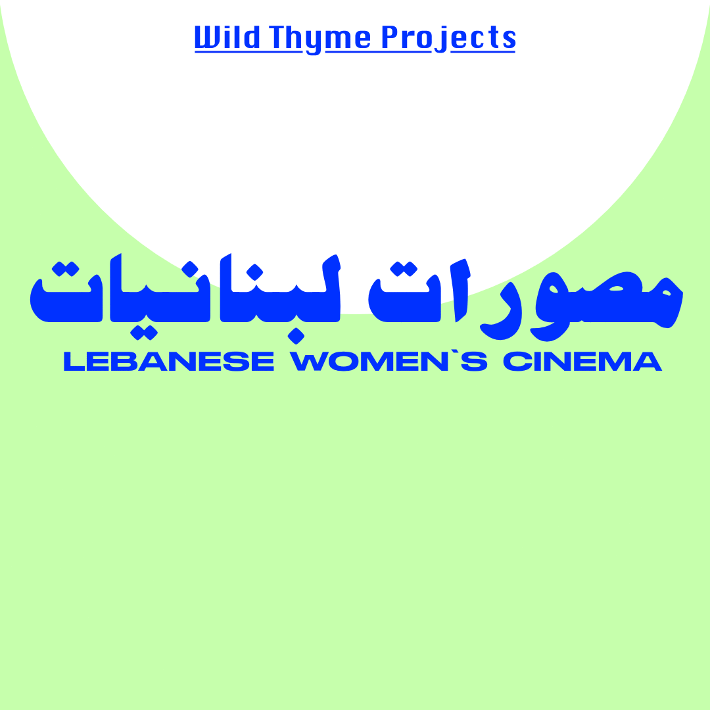

Visual Design Submission - Layla Salhab

Link to view gif folder
Social Media Campaign Gif
Link to view GIF{kind=link}
Link to view gif folder
For this project, I have created a GIF that would act as a social media promotion for my fictional gallery's film programme.
- I chose an Instagram post, which would be a square
- Going with the theme of the website, I created a graphic that is simple, with geometrical shapes, and a focus on a bold colour for text and pastels for the background. A circle goes from top to bottom, and when it reaches the bottom of the square, the film proramme and dates appear.
- I have used 42 frames, set at 200 milliseconds frames per second rate.
- The GIF frames were created in Adobe XD (on a 1080x1080 artboard) to allow me to use the same fonts as I did with the mockups and then the artboards were exported to my desktop.
- I used different fonts for a more interesting look: Silom for the gallery name, Beirut for the Arabic tex which is a translation of Lebanese Women's Cinema, Stretch Pro for the title in the middle, and Epilogue for the bottom text.
- I then opened them in GIMP and added them as layers on top of eachother, and exported as a GIF, choosing the 'Loop Forever' option for better seamlessness.